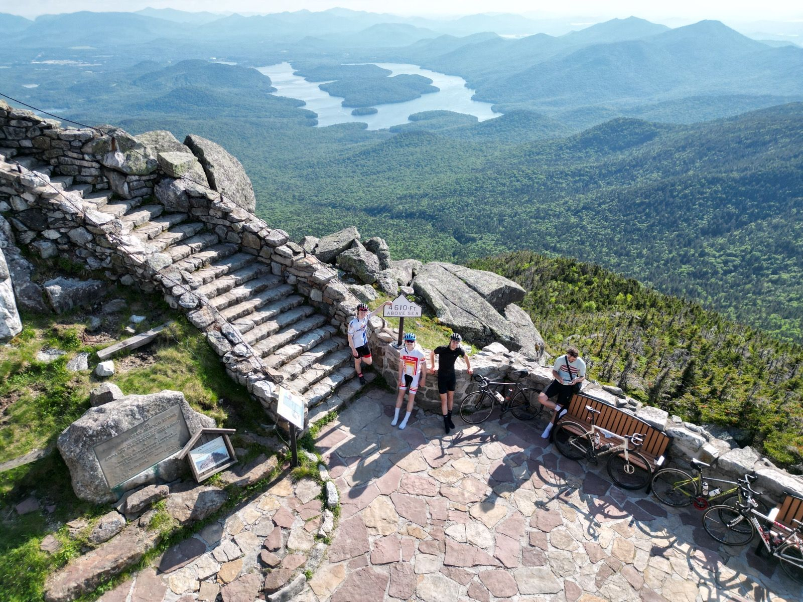
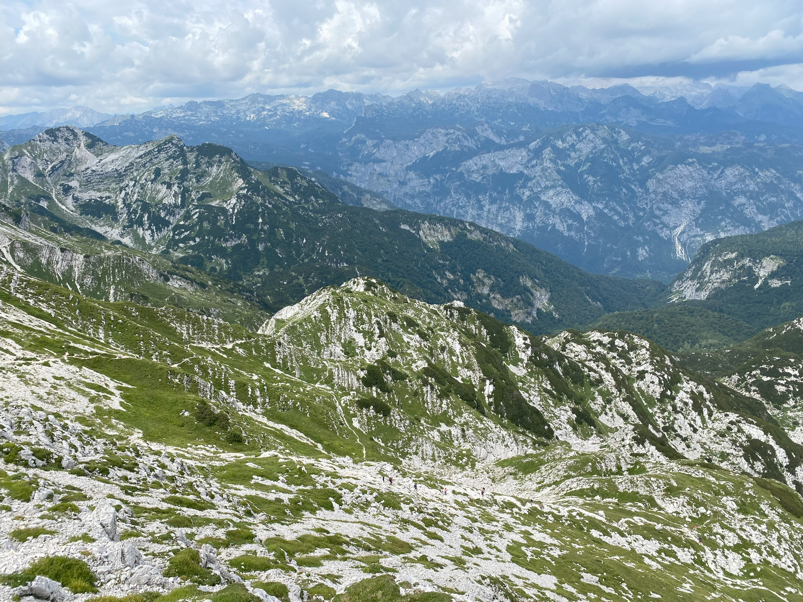
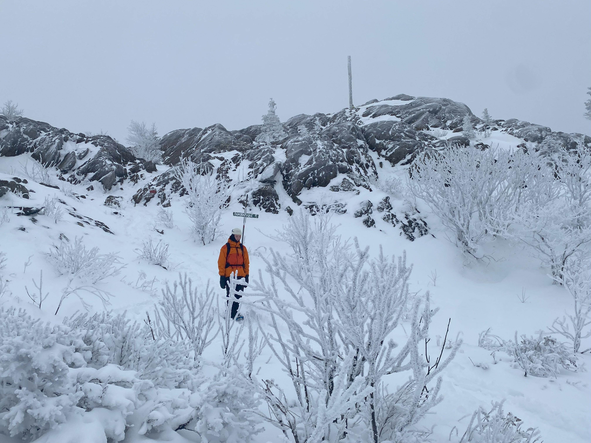
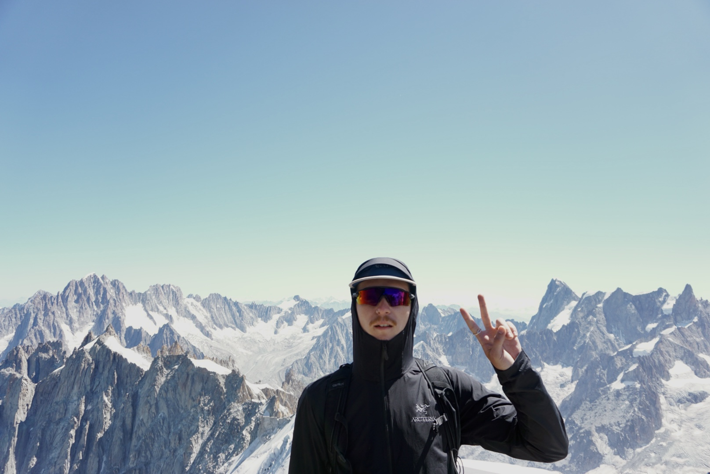

Canada:
Québec:
- Mont Jacques-Cartier - - - - - - - - - - - - - - - - - - - - - - - - - - - - - - - - - - - 1270m - 4167'
- Mont Richardson - - - - - - - - - - - - - - - - - - - - - - - - - - - - - - - - - - - - - - 1180m - 3871'
- Acropole des Draveurs - - - - - - - - - - - - - - - - - - - - - - - - - - - - - - - - - - 1048m - 3438'
- Mont du Lac des Cygnes - - - - - - - - - - - - - - - - - - - - - - - - - - - - - - - - - 980m - 3215'
- Mont Vallières-de-Saint-Réal - - - - - - - - - - - - - - - - - - - - - - - - - - - - - - -940m - 3084'
- Mont Tremblant - - - - - - - - - - - - - - - - - - - - - - - - - - - - - - - - - - - - - - - - 875m - 2871'
- Mont Hereford - - - - - - - - - - - - - - - - - - - - - - - - - - - - - - - - - - - - - - - - - 875m - 2870'
- Mont Orford - - - - - - - - - - - - - - - - - - - - - - - - - - - - - - - - - - - - - - - - - - -853m - 2799'
- Mont Kaaikop - - - - - - - - - - - - - - - - - - - - - - - - - - - - - - - - - - - - - - - - - -838m - 2749'
- Mont Ernest-Laforce - - - - - - - - - - - - - - - - - - - - - - - - - - - - - - - - - - - - -820m - 2690'
- Pic de l'Ours - - - - - - - - - - - - - - - - - - - - - - - - - - - - - - - - - - - - - - - - - - 740m - 2428'
- Mont Ham - - - - - - - - - - - - - - - - - - - - - - - - - - - - - - - - - - - - - - - - - - - - 713m - 2339'
- Mont Pinacle - - - - - - - - - - - - - - - - - - - - - - - - - - - - - - - - - - - - - - - - - - 675m - 2215'
- Mont Olivine - - - - - - - - - - - - - - - - - - - - - - - - - - - - - - - - - - - - - - - - - - 670m - 2198'
- Mont Chauve - - - - - - - - - - - - - - - - - - - - - - - - - - - - - - - - - - - - - - - - - -600m - 1969'
- Montagne Blanche - - - - - - - - - - - - - - - - - - - - - - - - - - - - - - - - - - - - - -565m - 1854'
- Mont Saint-Hilaire - - - - - - - - - - - - - - - - - - - - - - - - - - - - - - - - - - - - - - 413m - 1355'
- Cap Trinité - - - - - - - - - - - - - - - - - - - - - - - - - - - - - - - - - - - - - - - - - - - -411m - 1348'
- Mont Saint-Alban - - - - - - - - - - - - - - - - - - - - - - - - - - - - - - - - - - - - - - - 364m - 1194'
- Mont Saint-Grégoire - - - - - - - - - - - - - - - - - - - - - - - - - - - - - - - - - - - - - -251m - 823'
- Mont-Royal - - - - - - - - - - - - - - - - - - - - - - - - - - - - - - - - - - - - - - - - - - - - 233m - 764'
- Mont-Saint-Bruno - - - - - - - - - - - - - - - - - - - - - - - - - - - - - - - - - - - - - - - -218m - 715'
Ontario:
- Blue Mountain - - - - - - - - - - - - - - - - - - - - - - - - - - - - - - - - - - - - - - - - - 450m - 1476'
Alberta:
- Tunnel Mountain - - - - - - - - - - - - - - - - - - - - - - - - - - - - - - - - - - - - - - 1692m - 5551'
USA:
- Mount Marcy - - - - - - - - - - - - - - - - - - - - - - - - - - - - - - - - - - - - - - - - - 1629m - 5344'
- Whiteface Mountain - - - - - - - - - - - - - - - - - - - - - - - - - - - - - - - - - - - - 1483m - 4865'
France:
Auvergne-Rhône-Alpes:
- Lac blanc - - - - - - - - - - - - - - - - - - - - - - - - - - - - - - - - - - - - - - - - - - - -2352m - 7717'
- Le massif du Vercors - - - - - - - - - - - - - - - - - - - - - - - - - - - - - - - - - - - 2341m - 7680'
- Plan de l'aiguille - - - - - - - - - - - - - - - - - - - - - - - - - - - - - - - - - - - - - - -2300m - 7545'
- Lac du Cos - - - - - - - - - - - - - - - - - - - - - - - - - - - - - - - - - - - - - - - - - - 2182m - 7159'
- Le Montenvers - - - - - - - - - - - - - - - - - - - - - - - - - - - - - - - - - - - - - - - -1913m - 6276'
- Le mont Veyrier - - - - - - - - - - - - - - - - - - - - - - - - - - - - - - - - - - - - - - - 1291m - 4236'
- La Bastille - - - - - - - - - - - - - - - - - - - - - - - - - - - - - - - - - - - - - - - - - - - - 476m - 1562'
Occitanie:
- Le château de Mirabat - - - - - - - - - - - - - - - - - - - - - - - - - - - - - - - - - - 1270m - 4167'
Slovakia:
- Rysy - - - - - - - - - - - - - - - - - - - - - - - - - - - - - - - - - - - - - - - - - - - - - - - 2501m - 8205'
- Tatranská Lomnica - - - - - - - - - - - - - - - - - - - - - - - - - - - - - - - - - - - - -2190m - 7185'
Slovenia:
- Vogel - - - - - - - - - - - - - - - - - - - - - - - - - - - - - - - - - - - - - - - - - - - - - - -1922m - 6306'
Colombia:
- Las Tres Cruces - - - - - - - - - - - - - - - - - - - - - - - - - - - - - - - - - - - - - - -1890m - 6201'




